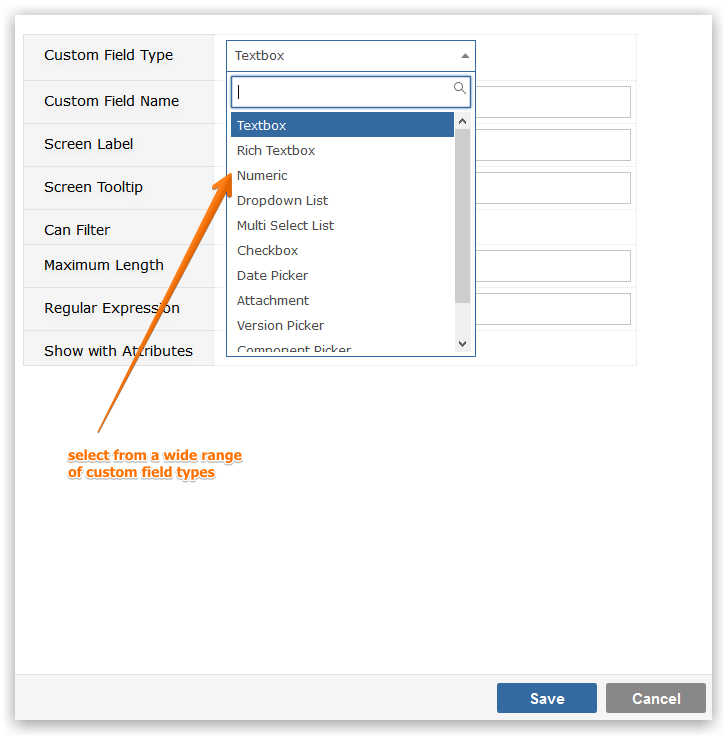

You can create basic custom fields of the following types

To add a new Custom Field, click on the Add button and you will be prompted to provide
To maintain the Custom Field Name, Screen Label or Screen Tooltip, click in the appropriate field and use Inline editing to easily and instantly change the field value.
To delete a Custom field click on the Delete icon to the right of the screen. If the Custom Field is associated with data you will be warned that the data will be removed if you proceed with the delete. In such circumstances, unless you genuinely wish to delete the data, you should go to Screens and simply uncheck the checkboxes against the Custom Field to disable it.
There are two placement regions on the View Item page (the page that shows you all of the detail of your work item), the Attributes Region, which is on the left hand side, and the Content Region, which occupies the centre of the page. If you check 'Show with Attributes' when you view the full list of fields for a task, your Custom Field will be shown in the Attributes pane, otherwise your Custom Field will appear in the Contents Region of the page.